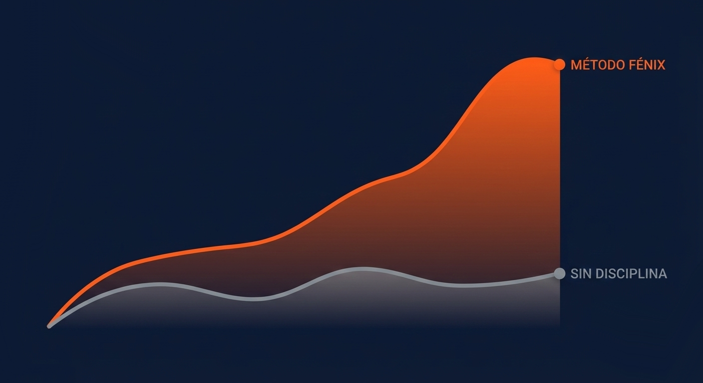
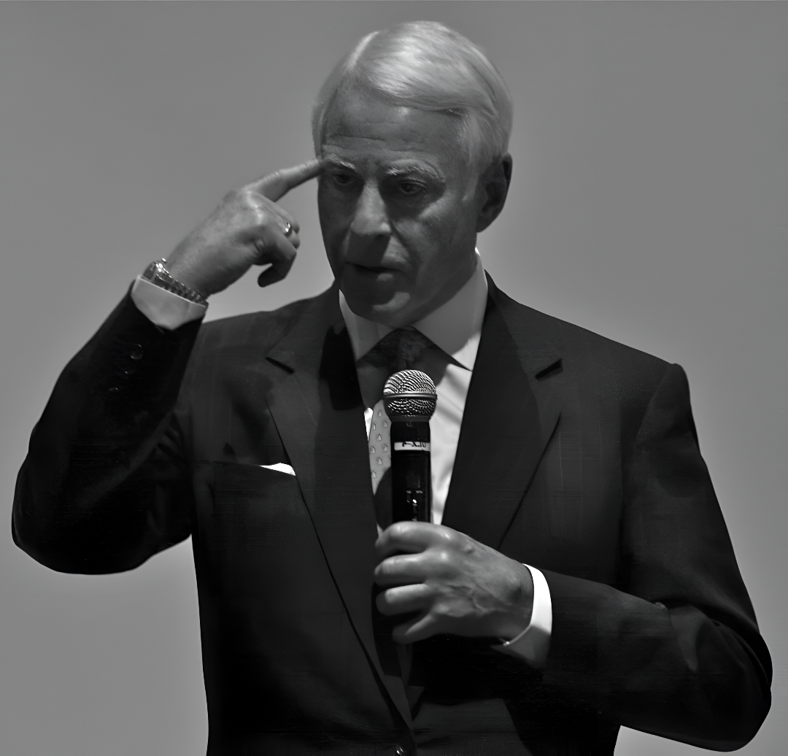

Toma 1 minuto para diagnosticar tu estado actual de disciplina.
Paso 1 de 5
Para personalizar tu experiencia, dinos:
¿Cómo te identificas?
Paso 2 de 5
Tu Círculo de Influencia
Brian Tracy enseña que "instruimos por precepto, pero enseñamos por ejemplo".
Paso 3 de 5
Identifica tu mayor obstáculo
¿Qué es lo que más te frena hoy?
Paso 4 de 5
Expectativa de tiempo
¿En cuánto tiempo crees que alcanzarás el éxito total?
El Factor Fénix
Tu camino proyectado con nuestro método vs. el esfuerzo sin guía.

Basado en la Ley de la Acumulación: pequeños cambios, resultados masivos.
Paso Final
Activa tu transformación
Guarda tu análisis y accede a tu plan personalizado.
Al continuar, aceptas comprometerte con tu propia excelencia.
Acceso a Miembros
Bienvenido de nuevo.
La disciplina es el puente entre metas y logros.

"Tu capacidad de ir de la meta a la realización determina tu valor."
Bienvenido, Cargando...
Hoy es el primer día del resto de tu vida.
14:30
Módulo 01: El Despertar
¿Por qué unos ganan más que otros?
El éxito no es un accidente. Es tan predecible como que el sol sale por el Este.
Descartando Conceptos Errados
Toca las tarjetas para descubrir la verdad.
🎓
Mito: Educación
"Necesitas títulos universitarios para triunfar."
💡
La Realidad
El éxito se basa en el Instinto de Triunfo, no en diplomas. Es la fuerza motriz que nos empuja a la acción.
💰
Mito: Dinero
"Necesitas dinero para hacer dinero."
🔥
La Realidad
El dinero es un efecto, no la causa. La causa es la Satisfacción Personal y el valor que aportas.
La Anatomía del Éxito
El éxito no es solo dinero. Si fallas en una, el sistema colapsa.
🧘♂️1. Paz Mental (La Base)▼
Es el estado de armonía interna. Sin ella, ninguna victoria se disfruta. Es la ausencia de miedo, estrés y culpa.
"La psique enferma al soma."
⚡2. Salud y Energía▼
El 80% de los problemas de salud vienen de la falta de paz mental. Tu cuerpo es el vehículo de tu propósito.
❤️3. Relaciones Afectivas▼
El 85% de tu éxito depende de cómo te llevas con los demás. Prueba rápida: ¿Cuánto te ríes en tus relaciones?
💸4. Libertad Económica▼
Tener suficiente dinero para no preocuparte por él. Debes sacar el dinero de tu mente para llenarla de causas superiores.
🎯5. Metas e Ideales Valiosos▼
Necesitas una dirección clara. ¿Qué te hace levantar cada mañana? Los valores guían tu camino.
🪞6. Autoconocimiento y Autocomprensión▼
Requiere valentía y honestidad brutal para aceptar tus debilidades y fortalezas.
No puedes cambiar lo que no entiendes. Es el arte de saber qué impulsa realmente tus acciones.
🌟7. Satisfacción Personal (Autovaloración)▼
Es la sensación profunda de saber que te estás convirtiendo en todo lo que eres capaz de ser.
La estadística es cruel: la mayoría muere con su música dentro.
Tu deber es agotar tu potencial.
La Fórmula Maestra
C x E = R
Llegaste al mundo sin manual. Aquí está la ecuación:
1
5
Poco entendimiento genera pocos resultados, aunque te esfuerces.
CONTRATO DE COMPROMISO FÉNIX
Entiendo que C x E = R. Me comprometo a aumentar mi Comprensión y mantener mi Esfuerzo.
Módulo 02: El Sistema Operativo
Las 7 Leyes de Acero
Toca cada ley para estudiarla y activarla.
Módulo 03: Ingeniería Interna
Desbloqueando tu Potencial
La distancia entre donde estás y donde podrías estar es una fórmula matemática.
La Fórmula del Desempeño Humano
(AI + AA)xA=PHI
AI = Atributos Innatos | AA = Adquiridos | A = Actitud Prueba mover los valores. Descubre qué factor multiplica tus resultados.
0
Tu actitud está matando tu potencial.
🔒
Domina la fórmula arriba para desbloquear el Reactor.
El Núcleo del Sistema: Autoconcepto
Tu mundo exterior es un reflejo de tu mundo interior.
Para cambiar los frutos, debes cambiar las raíces.
Ideal Propio
Autoimagen
Autoestima
Carga de Energía Subconsciente:
Repite: "¡ME AGRADA MI PERSONA!" y pulsa el botón repetidamente para cargar el sistema.
Módulo 04: El Superordenador
Tu Central de Energía
Tu mente consciente es el capitán (10%).
Tu subconsciente es la tripulación y el motor (90%).
La Metáfora del Jardinero
Tu consciente elige la semilla. Tu subconsciente la hace crecer, sea flor o veneno.
¿Qué vas a plantar hoy?
Esperando semillas...
🔒
Ley de la Sustitución
La mente solo puede sostener un pensamiento a la vez. Haz la prueba.
"NO SOY CAPAZ"
🔒
Ley de la Concentración
Lo que se piensa, crece. Mantén el foco para materializar.
Módulo 05: Madurez Mental
Cómo hacerse cargo de su vida
El punto de quiebre entre la infancia y la adultez no es la edad. Es la Responsabilidad.
El Credo del Arquitecto
Yo soy el arquitecto de mi propio destino.
Todo lo que soy y todo lo que seré depende de mí.
Si no me gusta cómo están las cosas, soy yo quien debe cambiarlas.
Como dijo Henry Ford: "Nunca te quejes, nunca expliques".
La queja es el refugio de quienes se niegan a crecer.
🔒
Diagnóstico de "Excusitis"
Identifica tus enemigos. Haz clic en las excusas que has usado recientemente para eliminarlas de tu sistema.
(Debes eliminar al menos 3 para avanzar).
Excusas eliminadas: 0 / 3
🔒
La Vacuna contra la Negatividad
Cada vez que sientas ira o ganas de culpar a alguien, di:
SOY RESPONSABLE
Módulo 06: Desintoxicación
El Árbol de las Emociones Negativas
No puedes avanzar si arrastras cadenas.
Las emociones negativas dependen de que tú las alimentes.
"No existe la enfermedad mental, solo diferentes grados de irresponsabilidad."
— Thomas Szasz
Salud del Árbol Negativo:
🤬 😭 😠 😤
Raíz 1: Justificación
Raíz 2: Identificación
El árbol es demasiado fuerte. Corta las raíces primero.
¡Árbol Derribado!
Has recuperado tu energía vital. Ahora eres libre para usarla en tus metas.
Módulo 07: Libertad Total
Liberando sus Frenos
La culpa es el mayor destructor de potencial.
Hoy vamos a cortar las cadenas que te atan al pasado.
¿Cómo se manifiesta tu culpa?
Selecciona los patrones que reconoces en ti (Sé honesto):
Reconocerlo es el primer paso para sanarlo.
La Ley del Perdón
Para avanzar, debes perdonar libremente. Rompe las 4 cadenas para abrir la puerta del éxito.
LIBERTAD INCONDICIONAL
👨👩👧PADRES
👥OTROS
👤A MÍ MISMO
🙏PEDIRLO
Perdonar a...
Texto descriptivo...
Escribe la frase liberadora:
PERDONO Y OLVIDO
Módulo 08: Paz Mental
El Destructor de Preocupaciones
La preocupación es imaginación negativa.
Desármala con hechos y acción.
La Mentira de la Preocupación
Toca las barras para ver la realidad de tus miedos.
40%
30%
12%
10%
8%
Haz clic en una barra...
🔒
Procesador de 4 Pasos
Introduce una preocupación actual para desintegrarla.
PASO 1
Claridad Absoluta
Escribe detalladamente: ¿Qué te preocupa exactamente?
PASO 2
El Peor Escenario
Si todo sale mal, ¿qué es lo peor que podría pasar? (Mátalo por escrito)
PASO 3
Neutralizar el Miedo
Di: "Si esto pasa, lo aceptaré". Al aceptarlo, el miedo desaparece.
"..."
PASO 4
Acción con Propósito
Ya aceptaste lo peor. Ahora, haz algo INMEDIATAMENTE para asegurarte de que no pase.
"Haz lo que puedas, donde estés, con lo que tienes, y no te preocupes por el resto."
— Teddy Roosevelt
Módulo 09: Actualización de Software
Programando para el Éxito
Tu mente es un biocomputador.
Hasta ahora, ha corrido programas de otros. Hoy instalas el tuyo.
El Enemigo: La Zona de Confort
La Homeostasis quiere que todo siga igual. La Psicoesclerosis endurece tu actitud.
Golpea la zona de confort hasta romperla.
ZONA DE CONFORT
Clics para romper: 10
🔒
Los 4 Pilares de la Reprogramación
Activa los motores para instalar el nuevo hábito.
1. Deseo
Obsesión ardiente. Debes quererlo con intensidad.
2. Decisión
Corta todas las excusas. Es sí o sí.
3. Determinación
Persistencia blindada. Seguirás aunque falles.
4. Disciplina
Hacer lo que debes, cuando debes, quieras o no.
🔒
Ley de la Repetición (21 Días)
Un nuevo hábito tarda 21 días en instalarse.
Define TU nuevo hábito hoy.
> INICIANDO PROTOCOLO DE NUEVO HÁBITO...
> INGRESE COMANDO:
> COMANDO ACEPTADO.
> GENERANDO COMPROMISO DE 21 DÍAS...
> EJECUTANDO LEY DE REVERSIBILIDAD (Fingir hasta lograr)...
Módulo 10: Ingeniería del Yo
Cambiando su Concepto Propio
No obtienes lo que quieres. Obtienes lo que eres.
Es hora de rediseñar tu "Yo".
La Brecha de Autoestima
Tu autoestima es la relación entre cómo te ves (Autoimagen) y cómo desearías ser (Ideal Propio).
Acerca las realidades para subir tu energía.
Cierra los ojos. El subconsciente no distingue imaginación de realidad.
✍️
2. Afirmación (Las 3 P's)
Personal, Positivo, Presente. Escribe: "Yo me agrado".
🗣️
3. Verbalización
Dilo en voz alta. Usa el espejo.
TU REFLEJO AQUÍ
🎭
4. Asumir el Papel
"Finge hasta que lo logres". La acción genera la emoción.
ACTIVAR MODO ACTOR
Módulo 11: Bio-Hacking Mental
La Nueva Dieta Mental
Principio GIGO: Garbage In, Garbage Out.
Tu mente crea tu realidad con los datos que le das de comer.
Selector de Nutrientes
Elige qué vas a consumir hoy. Cuidado con la intoxicación.
📺
Noticias / TV
Comida Chatarra
📚
Libro (30 min)
Proteína Mental
🤬
Chismes
Veneno Puro
🎧
Audio Seminario
Suplemento
Estado del Sistema: Neutro
🔒
La Universidad sobre Ruedas
¿Cuánto tiempo pasas en transporte al día?
1 Horas diarias
Equivalencia en 10 años:
2.5 Semestres Universitarios
🔒
Auditoría de Red
"No puedes volar con las águilas si rascas el suelo con los pavos."
🦅
🦃
🦅
Amenaza detectada: Gente cínica. Acción: Eliminar.
🔒
Secuencia de Arranque (Boot Sequence)
La primera hora define el "Estado" de todo el día.
Módulo 12: Instalación de Apps
Software para el Cerebro
Tu tiempo es el recurso #1. No lo gastes preocupándote.
Usa estas herramientas para programar resultados predecibles.
1. La Terminal Psicomotora
Escribir es mágico: es visual, auditivo y kinestésico a la vez.
Escribe tu Meta Principal de hoy (Programación diaria).
daily_goals.exe
user@fenix:~$iniciar_protocolo_escritura
>
Comando guardado en subconsciente.
🔒
2. El Freno de Emergencia
Cuando un pensamiento negativo o de temor aparezca, grita mentalmente: ¡ALTO! Detén el disco rayado ahora.
MIEDO / DUDA
🔒
3. Ley de la Relajación
En el mundo mental, el esfuerzo se vence a sí mismo.
Instrucción: No fuerces. Mantén el ratón suavemente sobre el orbe para cargarlo. Si haces clic o te mueves rápido, se rompe.
Estado: Tensión
Módulo 13: Overclocking Cerebral
Técnicas de Super Aprendizaje
Usas el 2% de tu capacidad.
Aprende a acceder al estado Alfa para absorber como una esponja.
Sintonizador de Frecuencias
Desliza para encontrar el estado óptimo de aprendizaje (Alfa/Theta).
¿Sientes resistencia? Usa la afirmación de poder para arrancar el motor.
ESPERANDO ORDEN...
Módulo 18: Neuro-Plasticidad
Cómo Duplicar su Poder Mental
A los 2 años, el 94% somos genios creativos. A los 7 años, solo el 4%.
Vamos a reactivar ese potencial dormido.
Tu Tipo de Genialidad
La escuela solo mide Verbal y Matemática.
Selecciona tus áreas fuertes reales:
🗣️ Verbal
➗ Matemática
🎨 Espacial/Artística
🏃 Kinestésica/Física
🎵 Musical
🤝 Social (Líder)
🧘 Intuitiva
🚀 Emprendedora
Selecciona al menos una...
🔒
Diagnóstico: ¿Mecánico o Adaptable?
Califica del 1 al 10 qué tan fácil te resulta decir estas frases.
(1 = Imposible, 10 = Muy fácil)
Tu Personalidad es:
MECÁNICA (Rígida)
🔒
Reactivación Neuronal
Usa la Ley de la Creatividad. Bombea la afirmación hasta despertar al niño genio.
🧠
Repeticiones: 0/10
Módulo 19: Conexión Universal
El Súper Consciente
Tienes acceso a una "Mente Mayor" las 24 horas.
Aprende a delegar problemas y recibir soluciones perfectas.
Activación por Soledad
Siéntate en silencio absoluto. Sin música. Sin movimiento.
Escucha la voz tranquila dentro de ti.
Haz clic para entrar al Vacío (30s)
Conexión establecida. La intuición está activa.
🔒
Buzón Súper Consciente
Define tu problema claramente y envíalo.
La mente trabajará 24/7 mientras tú haces otra cosa.
PROCESANDO EN SEGUNDO PLANO...
🔒
Radar de Sincronicidad
Mantente alerta a encuentros fortuitos y destellos de intuición.
✨ Idea
👥 Encuentro
Módulo 20: Inteligencia Aplicada
Técnicas de Solución Creativa
La genialidad es claridad.
Aprende a forzar tu mente para que te dé las respuestas que necesitas.
Paso 1: Cambio de Lenguaje
Las palabras cambian tu química cerebral. Observa.
PROBLEMA
Algo con lo que se lucha. (Estrés alto)
🔒
Paso 2: El Método de las 20 Ideas
Define tu meta como pregunta (Ej: "¿Cómo puedo doblar mis ingresos?").
Luego, fuérzate a encontrar 20 respuestas. La #20 te hará rico.
0/20
Ideas Generadas
Módulo 21: Bio-Ingeniería
El Bio-Reactor Humano
Tu cuerpo es el vehículo de tu mente.
Salud = Energía. Sin energía, el sistema colapsa.
20%
ESTADO: CRÍTICO (Modo Supervivencia)
Protocolo de Arranque (Las 5 D's)
Activa la secuencia para comprometerte con la longevidad (+80 años).
🔒
Cámara de Desintoxicación
Elimina los "3 Venenos Blancos" tocándolos hasta que desaparezcan.
🧁
Azúcar
El asesino dulce
🧂
Sal
Retención y presión
🍞
Harina Blanca
Pegamento intestinal
🔒
Ecualizador de Vitalidad
Ajusta tus niveles para maximizar el flujo de energía.
Módulo 22: Alquimia Interna
Relación Mente-Cuerpo
Tu cuerpo genera energía bruta. Tu mente la refina.
No la quemes en emociones negativas; úsala para crear.
4. Energía Psíquica (Creatividad)
3. Energía Mental (Pensamiento)
2. Energía Emocional (Sentimiento)
💨 NEGATIVIDAD
1. Energía Física (Calorías)
Sistema en reposo...
🔒
Detectada Fuga en Nivel Emocional
Estás quemando tu combustible en quejas y culpa.
Aplica las leyes para sellar la fuga y elevar la energía.
🔒
Aislamiento del Sistema
Aleja las influencias negativas para mantener la presión.
ACTIVAR ESCUDO POSITIVO
Módulo 23: Mantenimiento del Sistema
Cámara de Descompresión
El estrés es la fricción de la mente.
Identifica la causa, paga el precio y libera la presión.
100 PSI
ALERTA: PRESIÓN CRÍTICA
Recalibración de Personalidad
El comportamiento Tipo A (Prisa/Agresividad) te está matando.
Cambia los interruptores hacia el Tipo B (Desempeño/Calma).
Enfermedad de PrisaEnfoque en Desempeño
Inseguridad / EstatusSeguridad Interna
Agresividad / IraRelaciones / Calma
Trabajo CompulsivoTiempo Libre / Balance
🔒
Cerrar Ciclos (Acción Incompleta)
Nada genera más estrés que un ciclo abierto (relación o trabajo).
Escribe la carta de cierre ahora. (No tienes que enviarla real, pero sí mentalmente).
CARTA DE LIBERACIÓN
🔒
Romper la Negación
¿Qué estás evitando enfrentar? La verdad te hará libre.
La realidad es:
Módulo 24: Inteligencia Social
El Reactor de Carisma
El 85% de tu éxito depende de tus relaciones.
Aplica la Ley del Esfuerzo Indirecto: Da lo que quieres recibir.
Diagnóstico de Personalidad
Calibra tus niveles actuales.
Energía Magnética: BAJA
🔒
Ley del Esfuerzo Indirecto
¿Cómo intentas ganar amigos? El enfoque directo falla. El indirecto triunfa.
TÚ
ELLOS
Selecciona un modo...
🔒
Gimnasio de Habilidades Sociales
Entrena los músculos de la carisma.
1. Aceptación (Sonrisa)
La sonrisa libera endorfinas y desarma.
2. Atención (Escucha)
Mantén presionado para escuchar sin interrumpir.
3. Apreciación (Gratitud)
Escribe una nota rápida de agradecimiento mental.
Has lanzado energía positiva. Espera el retorno...
🪃
Módulo 25: Resonancia Armónica
Construyendo Relaciones Superiores
El éxito en casa precede al éxito en el mundo.
Aprende la física de la compatibilidad.
Calibración de Pareja
Regla: Los VALORES deben ser iguales. El TEMPERAMENTO debe ser opuesto (Equilibrio).
Ajusta los sliders hasta lograr la Resonancia.
SEÑAL: DISONANTE
Tú vs Pareja
Introvertido vs Extrovertido
🔒
Biometría: La Prueba del Mejor Amigo
El enamoramiento pasa. El respeto queda.
Responde con brutal honestidad.
1. ¿Es tu pareja la persona con la que más te gusta hablar?
2. ¿Te ríes mucho con esta persona?
3. ¿Respetas profundamente su carácter?
RESULTADO: ...
...
🔒
El Puente de Comunicación
La relación muere si se corta la señal. Misión: Mantén la señal viva haciendo clic rítmicamente en "ESCUCHAR".
TÚ
ELLOS
Se perdió la señal. Reiniciando...
Módulo 26: Legado Genético
Cómo Criar Super Niños
Tu hijo es un proyecto de ingeniería humana.
Tu misión: Construir una autoestima a prueba de balas.
Protocolo de Defensa
La crítica destructiva es veneno nuclear.
Activa el escudo para proteger el núcleo del niño.
👶
"Eres torpe""¡Cállate!""¿Por qué no eres como...?"
ACTIVAR AMOR INCONDICIONAL (Bloquear Crítica)
🔒
Mezclador de Nutrientes
El amor no es abstracto. Se compone de 4 acciones físicas.
Llena los tanques para hacer crecer la autoestima.
🌱
🔒
Protocolo de Reparación de Daños
¿Te equivocaste en el pasado? No importa. Puedes borrarlo hoy.
Comprométete con este guion sagrado.
"Hijos, quiero pedirles perdón por haberlos criticado..."